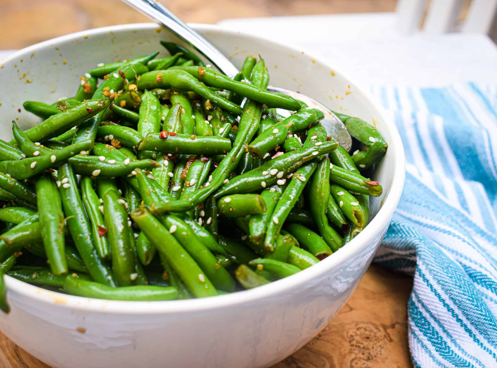

Asian Green Bean Salad
An awesome taste sensation!
- 1 pound fresh green beans, trimmed and cut into 2-inch pieces
- ¼ cup white sugar
- ¼ cup soy sauce
- 3 tablespoons olive oil
- 2 tablespoons mirin
- 1 teaspoon sweet chile sauce
- 3 tablespoons toasted sesame seeds
Directions
- Place green beans in a pot with water to cover; bring to a boil. Cook until tender, 6 to 8 minutes; drain.
- Combine green beans, sugar, soy sauce, oil, mirin, and sweet chile sauce in a bowl. Mix thoroughly. Cover with plastic wrap; refrigerate 30 minutes to 4 hours. Mix in sesame seeds.